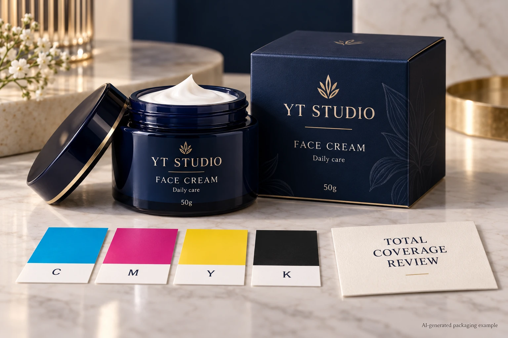
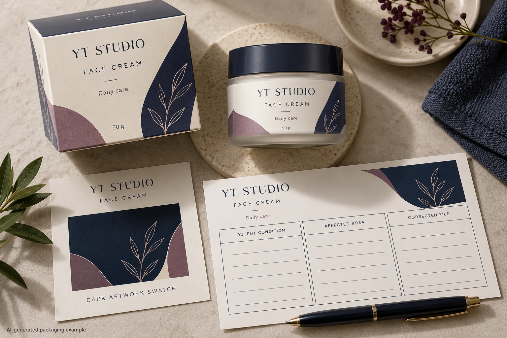

A dark cosmetic label can contain several process inks at the same location. Before asking the designer to reduce ink, agree which output condition and total-area-coverage limit the receiving prepress team actually means. Then locate the affected areas in the identified production export.
This is a combined-coverage decision, rather than a preference for a particular black recipe. A buyer should not copy a percentage from another printer and apply it across every object. The useful outcome is an accepted file whose relevant coverage has been evaluated under the intended workflow.

Define what the percentage describes
Esko's press-settings reference defines total area coverage as the sum of channel percentages at the same location. It connects the supported maximum to the press and substrate, and notes possible problems from exceeding it. The documentation is for a particular software version, not a universal cosmetic-label limit.
As arithmetic only, four hypothetical process channels containing 40, 30, 20 and 10 percent at one point sum to 100 percent. That example explains addition; it recommends neither those values nor that total. Ask the competent prepress party which channels and output condition its requested limit covers.
Specialty inks, white layers and named spot colors need explicit treatment in the agreed workflow. Do not add every visible separation into a new homemade acceptance number. Ask the receiving party how its inspection interprets those elements and preserve that explanation with the job.
Ask for the output condition before changing the artwork
Identify the intended printing process, complete construction and relevant output or separation arrangement. Ask who supplies the maximum, how it is checked and whether the file is evaluated before or after an agreed conversion. A limit without that context is an incomplete instruction.
Record the exact PDF or other production-file revision being inspected. The source document and a later converted export may not contain the same channel values. A successful check on yesterday's file does not establish the status of the replacement supplied this morning.
The color-profile handoff guide addresses the separate interpretation and conversion agreement. Keep that decision connected to the coverage check without treating a profile name as evidence that every area in the delivered file meets the requested limit.
Locate the affected areas, then choose a correction
Have the designer or authorized prepress operator identify the specific objects or image regions that need attention. Ask for their location, observed values under the named output condition and relationship to the brand's intended appearance. “Too much ink” is less useful than a marked region in a controlled file.
Let the competent artwork and prepress parties propose a correction. That may involve a supported separation or image adjustment, but procurement should not prescribe channel values without the process context. Recheck the resulting export and any brand-visible difference using the relevant proof arrangement.
Keep fine text, technical symbols and specialty areas identifiable during the work. A blanket adjustment intended to address a photographic shadow should not quietly alter an independently controlled barcode or brand-color object. The correction needs a scope, rather than a new global slogan about using less ink.
Use an area-to-output release record
This editorial sheet links the requested limit to the file and correction. It is not a certified preflight report.
| Field | Required record | Decision it supports |
|---|---|---|
| Output condition | Process, construction and agreed conversion reference | Which production arrangement the limit describes |
| Limit scope | Supplier-issued maximum and channels included | What the check is intended to assess |
| Inspected file | Exact export and revision | Which object is being released |
| Affected location | Marked region and reported coverage observation | Where a correction is needed |
| Correction | Named operator, agreed change and replacement export | What changed and who owns it |
| Review | Recheck result, appearance reference and approver | Whether the corrected file can proceed |
Start by obtaining the output and limit definitions. Inspect the intended export through the agreed workflow, mark relevant locations and commission the correction. Recheck the replacement file under the same defined arrangement. Have the brand review any meaningful appearance difference before releasing that export.
Hold the affected release if the limit's source is unknown, the inspected file differs from the supplied one or the reports use incompatible conversion assumptions. A green indicator in one setup should not cancel an unexplained warning in another without technical interpretation.

Do not confuse coverage with black construction
The black-ink build guide asks which channels form particular black objects and how those roles should be preserved. Total area coverage asks a different question about combined ink at a location in the defined output. A label can need both checks.
Overprint is another separate behavior. The overprint review guide covers how objects interact with backgrounds. A coverage correction does not automatically approve those interactions, physical color or finished-pack readability.
These boundaries matter during a small revision. If a replacement image reintroduces an unresolved dark region, the team should review that changed region. It need not rebuild every unchanged object simply because the phrase total ink limit appeared in the email.
Match the correction to the importance of the region
A hypothetical decorative background may tolerate a supported adjustment that closes the coverage question while preserving its role. The brand can compare the relevant proof and accept an identifiable replacement file.
A hero product image or critical brand panel may need closer appearance review before the same kind of change is accepted. If the proposed correction cannot preserve the required visual task under the selected process, discuss another supported route. A smaller reported total is not a complete purchasing success if the approved design meaning has been lost.
For a cosmetic label inquiry, send container details, dimensions, quantities, intended construction and the current export. Include the receiving prepress requirement and marked regions if available. The form prepares a message; share artwork and reports separately by email or WhatsApp. Ask for a defined output check before editing percentages without a shared reference.